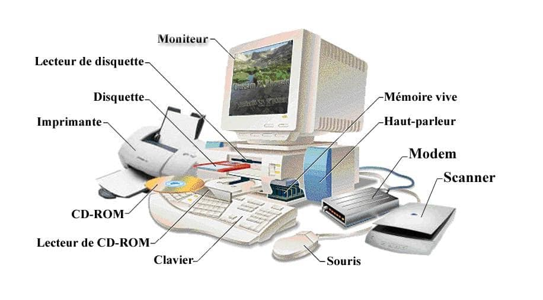
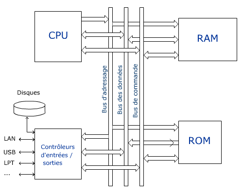
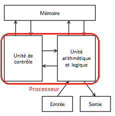

L'Architecture de l'Ordinateur
1. Les composants principaux
- CPU (Processeur) : Le cerveau → exécute les instructions.
- UAL : Fait les calculs (arithmétiques et logiques).
- Unité de contrôle : Coordonne les actions.
- Registres : Mémoire très rapide dans le CPU.
- RAM : Mémoire temporaire (rapide mais volatile).
- Stockage (SSD / disque dur) : Mémoire permanente.
- Périphériques : Clavier, souris, écran…

2. Cycle de fonctionnement
| Étape | Description |
|---|---|
| Fetch | Le CPU lit l’instruction en mémoire |
| Decode | Il comprend l’instruction |
| Execute | Il réalise l’action |
3. Les Bus
- Bus de données : transporte les informations
- Bus d’adresses : indique où lire/écrire
- Bus de contrôle : envoie les commandes

4. Architecture de Von Neumann
- Une seule mémoire pour données + programmes
- Simple et utilisé dans la plupart des ordinateurs
- Limite : tout passe par le même bus → ralentissement

5. Rôle du Système d'Exploitation
| Fonction | Description |
|---|---|
| Gestion des ressources | Partage CPU et RAM entre programmes |
| Gestion des fichiers | Organisation des données |
| Interface | Lien utilisateur / machine |